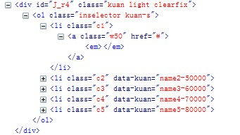

/**
* radio.js 点击高亮控件
* author:lover_116@163.com 灵玉
* @class Y.Radio
* @param {string} 容器或者触点selector
* @param {object} 配置项
* @return {object} 生成一个radio实例
* @requires {'node'}
*
* Y.Radio：
* 说明： radio构造器，通过new Y.Radio来render一个radio
* 使用： new Y.Radio(selector,config)
* 参数: selector:{string}容器选择器，获取多个node
* 配置： showindex {num} 默认显示所引
* onload:{function} 初始化扩展操作
* disable:{function} 触发事件，不可点击，参数为Array,[1,2,3]不可点击的所引，默认全部不可点击
* enable:{function} 恢复可点击，参数为Array,[1,2,3]恢复点击，默认全部可点
* range:{start:date,end:date} 默认选择范围
* refresh:{function} 重新加载
*
* Y.Checkbox：
* 说明： 继承Y.Radio，实现复选框功能
* 使用： new Y.Checkbox(selector,config)
* changeEvent:{mether} 重写Y.Radio的change事件
*/
YUI().use('radio',function(Y){
var oradio1 = new Y.Checkbox('#J_r1',{
showindex:1
});
})
YUI().use('radio',function(Y){
var descnodes = Y.all('.kuan-desc li');
var radios = new Y.Radio('#J_r2 li a',{
showindex:2,
onload:function(o){
descnodes.item(1).removeClass('hidden');
}
});
radios.on('change',function(e){
descnodes.addClass('hidden');
descnodes.item(e.index).removeClass('hidden');
});
Y.one('#d').on('click',function(){
radios.disable([1,2]);//失效1，2
descnodes.item(0).addClass('hidden');
descnodes.item(1).addClass('hidden');
});
Y.one('#u').on('click',function(){
radios.enable();
});
})
YUI().use('radio',function(Y){
var radioTwo = new Y.Checkbox('#J_r3');
Y.one('#dt').on('click',function(){
radioTwo.disable();
});
Y.one('#ut').on('click',function(){
radioTwo.enable();
})
})
